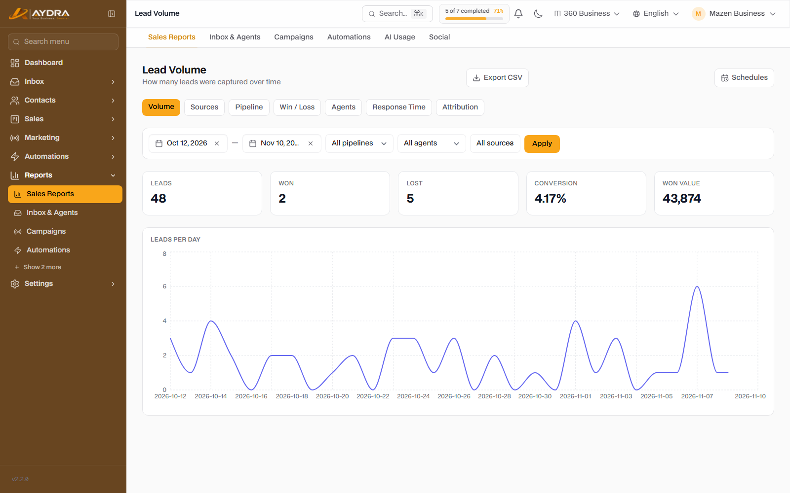
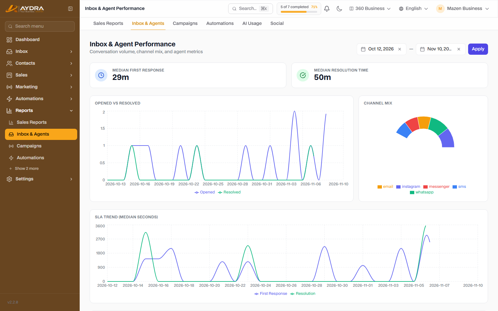
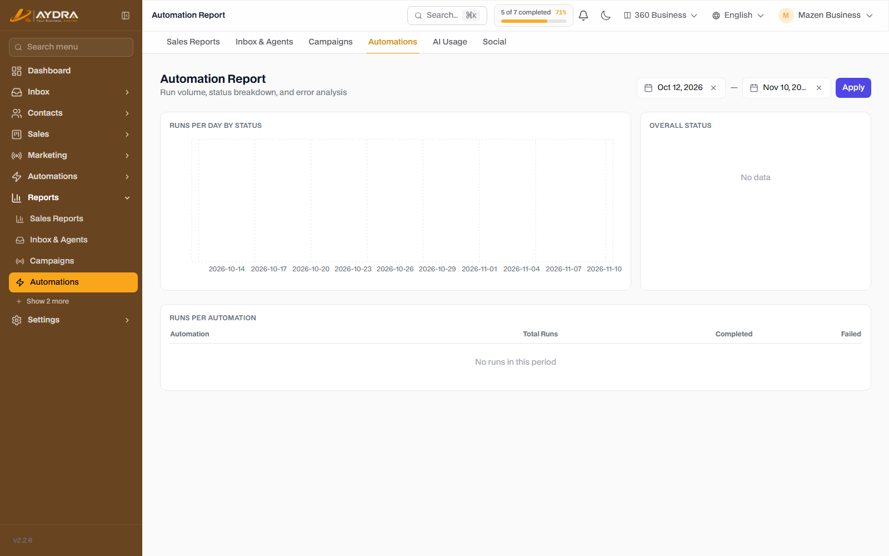
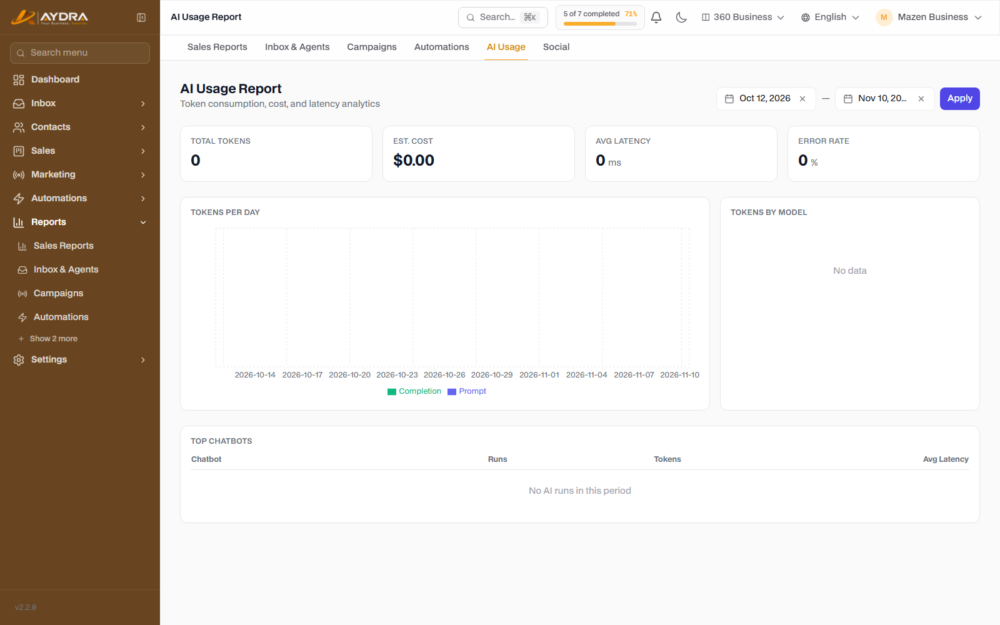
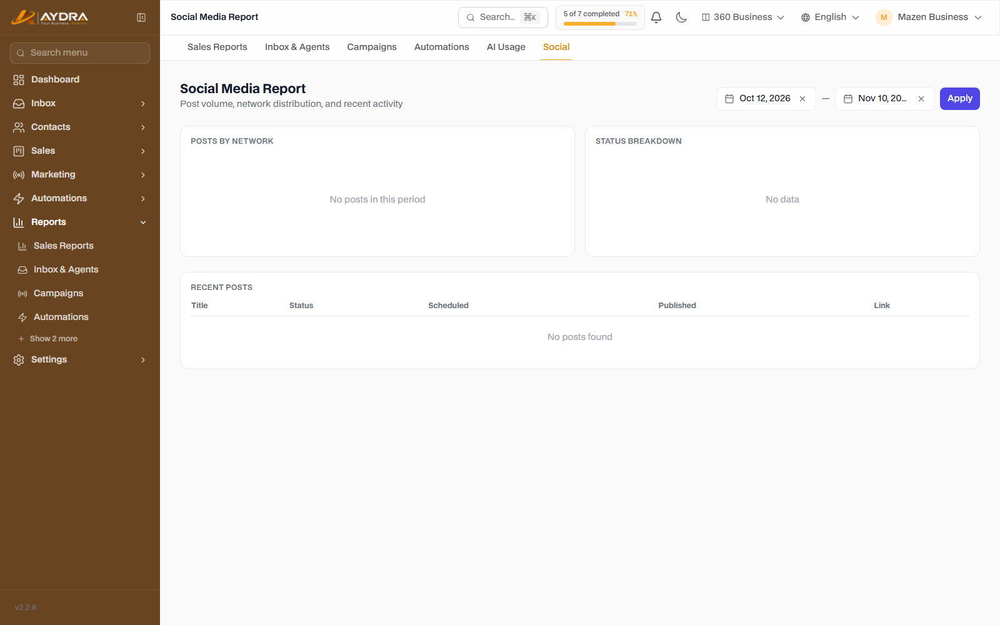

Reports & Analytics
Numbers don't lie — but they have to be read in context. This guide explains every report available, when to use it, and how to export or schedule it so it reaches your inbox automatically.
The seven sales reports (Volume, Sources, Win/Loss, Agents, Response, Pipeline, Attribution) require the Sales Reports feature in your plan. The conversations, campaigns, automation, AI, and social reports are also available depending on your plan — if the screen does not appear, it isn't included.
1. Where do you start?
All reports are under the Reports section in the sidebar:
| Report | Answers the question |
|---|---|
| Sales | Are we selling more? Who is selling? And where do the deals come from? |
| Conversations (Inbox) | Are we replying quickly? And what is the team's workload? |
| Campaigns | Which campaign actually landed and which one failed? |
| Automation | Are the scenarios working or failing? |
| AI | How many tokens are we consuming and where do they go? |
| Social | How are the posts and accounts performing? |
Every report starts with a time period filter. Change the period first before reading any number — most confusion comes from comparing different periods.
2. Sales reports

2.1 Sales Volume (Volume)
The number and value of deals over time, broken down by stage and status.
- Use it to: measure the monthly trend and see your best months.
- Watch for: is the value rising while the count stays flat? (That means the average deal is getting bigger.)
- The results can be grouped by day/week/month.
2.2 Sources
Where the leads and deals come from: Scraper, Form, Campaign, Manual, and others.
- It shows the number of leads per source and the conversion rate to a deal.
- It helps you stop expensive sources and double down on the winning ones.
- It relies on the source being recorded when the lead is created — make sure the forms and campaigns are linked to a source.
2.3 Win/Loss
Winning deals versus losing deals, with the loss reasons if they were recorded.
- It guides you to the recurring loss reasons (price, timing, competitor).
- Encourage the team to record the loss reason when closing a deal — without it, the report is only half useful.
2.4 Agent Performance (Agents)
For each team member: the number of deals, the value, the win rate, and the average time to close.
- Use it in the monthly review and for fair lead distribution.
- Be careful about reading the numbers in isolation from the type of leads assigned to each agent.
2.5 Response Speed (Response)
The time between a lead/message arriving and the first human reply.
- Replying within the first 5 minutes clearly lifts conversion.
- Watch the leads that were never answered at all.
2.6 Pipeline
The distribution of deals across the stages and their weighted value.
- It reveals the bottlenecks: a stage where deals pile up without progressing.
- Use it in the weekly sales meeting.
2.7 Attribution
Linking the deal to the channel, campaign, or UTM the customer came from.
- It relies on UTM links and lead sources.
- Without it, you will know that you have sales, but not where they came from.
3. Conversations Report (Inbox)

From Reports → Conversations:
- The number of new, resolved, and snoozed conversations.
- The average first response and the average resolution time.
- The breakdown by channel (WhatsApp/Instagram/Messenger/SMS/Email).
- The workload per agent.
If the average first response is high, try auto-assignment or an instant auto-reply that reassures the customer and then routes the conversation.
4. Campaigns Report
From Reports → Campaigns or from the campaign page itself:
- Targeted, sent, failed, and read (per channel).
- A breakdown of failures by reason (invalid number, rejected template, channel limit...).
- Export the recipient list (CSV) to analyze it externally.
- Compare campaigns with one another to find the best copy/timing.
5. Automation Report

From Reports → Automation:
- The number of runs per scenario.
- The success and failure rate, and the step where it fails.
- The average execution time.
- The most frequent errors.
Use the button that jumps to the runs log from the report to see the details of each failed run.
6. AI Report

From Reports → AI:
- The total tokens consumed and the remainder of the monthly limit.
- The breakdown by feature: chatbot, AI reply in automation, AI SDR, lead advisor, call summaries, post generation.
- The estimated cost if it is enabled.
- The number of failed requests (invalid key, limit exceeded, provider error).
As you approach the token limit, new features stop working but the old data remains. Watch the report weekly if you use AI SDR or the chatbot heavily.
7. Social Report

From Reports → Social:
- The number of posts per network (published/scheduled/failed).
- Post performance by network.
- The reasons posting failed (expired token, missing permission, rejected content).
8. CSV Export
Most screens have an Export button. The files available:
| File | Contents |
|---|---|
| Contacts | All contacts with their fields, tags, and segments |
| Campaign recipients | The status of each recipient in a given campaign |
| Conversations | Conversation data, its status, and its channel |
| AI runs | The requests, the tokens, and the result |
| Audit log | All administrative operations (for the manager) |
| Sales reports | Each report has its own export button |
The files are UTF-8 encoded. If the Arabic text appears garbled in Excel, open the file via Data ← From Text/CSV and choose UTF-8.
9. Scheduled Email Reports
From Reports → Sales → Scheduled Reports:
- Click New Schedule.
- Choose the report type (Volume, Sources, Win/Loss, Agents, Response, Pipeline, Attribution).
- Choose the frequency: daily / weekly / monthly.
- Enter the recipients' emails (comma-separated).
- Add optional filters: pipeline, agent, source.
- Save — the report arrives automatically as an attachment at the scheduled time.
You can edit or delete the schedule at any time from the same screen.
Sending scheduled reports depends on your own mail server (SMTP) and on the scheduler running on the server. If the reports do not arrive, check SMTP first, then ask the platform admin about Cron.
10. Tips for reading them correctly
- Fix the period: don't compare a full month with a week.
- Read the source with the result: a single winning deal can flatter an agent's report for a month.
- Watch the trend, not the number: three points in a row matter more than a single spike.
- Connect the reports: Response + Agents + Win/Loss together give a real picture.
- Record the loss reasons: without them, Win/Loss stays incomplete.
Common mistakes
| Problem | Cause | Fix |
|---|---|---|
| The sales report does not appear | The Sales Reports feature isn't included | Check your plan and upgrade it if needed |
| Numbers for a previous period changed | Old data was edited/deleted or recategorized | Reports are calculated live from the current data |
| Attribution is empty | There are no UTMs or recorded sources | Add sources and UTM links to the campaigns |
| The AI report shows zero | No provider is enabled or there is no usage | Check the AI providers and the settings |
| The scheduled report does not arrive | SMTP is not configured or the scheduler is down | Test SMTP and ask for a Cron review |
| CSV with garbled Arabic | Excel opened it with the wrong encoding | Open it as UTF-8 via Data ← From Text/CSV |
Next step: set up the team, billing, and security in the Account Admin & Troubleshooting guide.